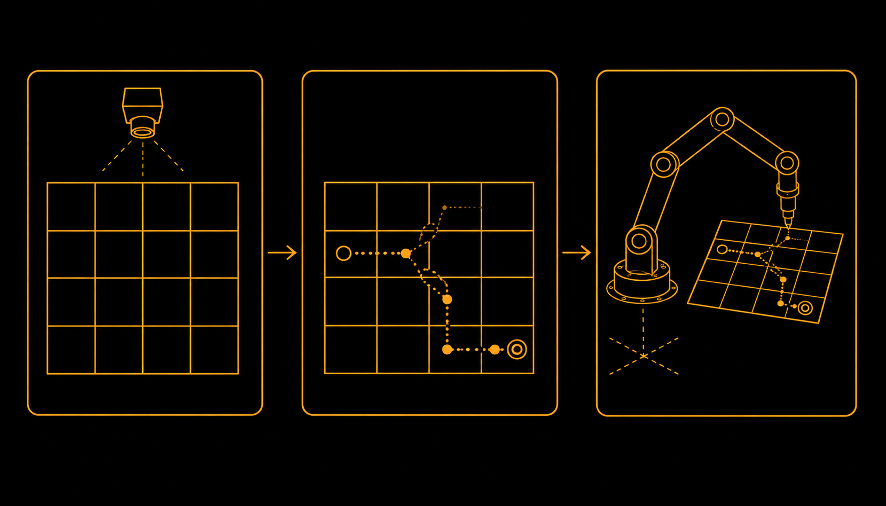

MyCobot Pro 600, From Digital Twin to Solving a Maze
A six axis MyCobot Pro 600 taken from hand derived kinematics and a validated digital twin, through a camera and marker based perception loop, to solving a physical maze end to end, from a single photograph of the board to executed joint motion on the real arm.
Mission
The MyCobot Pro 600 is a six axis robotic arm, and this project is really three pieces of work built on top of each other rather than three separate ones. The first piece derives the arm's kinematics and builds a digital twin validated against the real robot. The second closes the perception loop, giving the arm a camera and a set of printed markers so it can see where things actually are. The third uses both of those pieces together to solve a physical maze end to end with the physical arm, from a single photograph of the maze board to executed motion.
Building the digital twin
Homogeneous transformation matrices were derived by hand from assigned joint coordinate frames, then multiplied together in MATLAB to get the arm's final end effector transform. That transform was checked against the MyCobot software's own reported end effector position across several different joint angle sets, and the two agreed closely.
A URDF was built from CAD generated STL meshes and imported into MATLAB SimScape, so the same joint angles could be validated in simulation before ever touching the physical robot. Getting a clean URDF out of SolidWorks was the real obstacle in this piece, not the kinematics. The CAD file was not originally set up as an assembly, so the revolute joints, and the sixth joint in particular, had to be fixed by hand before the model behaved correctly.
Closing the perception loop
A plate of ArUco markers sits inside the robot's camera zone. OpenCV detects the markers and estimates their position in the camera frame, but that position still has to be translated into the robot's own coordinate frame before the arm can act on it.
A full homogeneous camera to robot calibration was attempted first, and abandoned for lack of precise extrinsics. It was replaced with an empirical linear mapping, built by placing the end effector directly on top of each marker and recording the correspondence by hand. It works, but it is not automated, moving the plate means remeasuring the offsets by hand, and that became the first thing to fix going into the final project. Every waypoint generated this way is still validated in the SimScape digital twin before being sent to the physical robot over a TCP/IP socket.
Solving the maze

Solving a 4x4 maze end to end is the flagship result. A camera image of a 6x6 inch maze board is cropped and binarized to separate walls from open path, and A* search with a Manhattan heuristic finds the shortest route between a chosen start and end point. Douglas Peucker simplification cleans up the raw pixel path, and the result is interpolated down to exactly 15 waypoints.
Those waypoints are moved into a coordinate frame centered on the maze and aligned to the robot's own axes, so no rotation correction is needed, then scaled from pixels to millimeters using the known 6x6 inch board size, and given a fixed height above the maze surface. A generalized inverse kinematics solver walks through the 15 waypoints one at a time, with each solve seeded by the last, and the resulting joint angles are played through the SimScape digital twin for a full visual check before being sent to the physical arm as TCP/IP packets for real time execution.
Two things are still rough. The coordinate transform assumes the maze board does not rotate relative to the robot, a real limitation if the board moves between the photograph and the solve. And the Manhattan heuristic pulls the solved path toward maze walls rather than the center, which is currently patched with a manual offset rather than fixed with a heuristic actually built to prefer central paths, an honest open problem rather than a polished one.
Running alongside this project was a separate coursework track in forward kinematics and Lagrangian dynamics: deriving a FANUC arm's forward kinematics by hand and validating it against a rebuilt model and the physical teach pendant, and deriving the full equations of motion for a three link arm from Lagrangian mechanics and solving them numerically. Neither one was its own project, they were the fundamentals underneath the MyCobot work above.